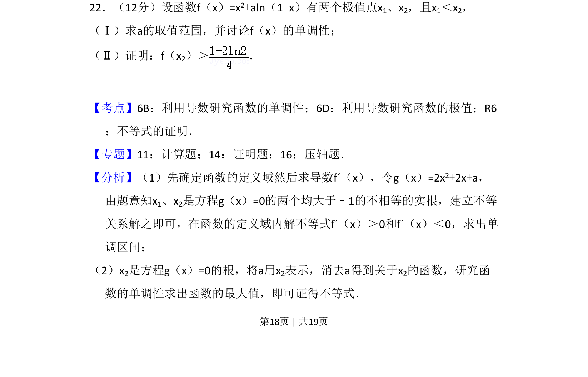
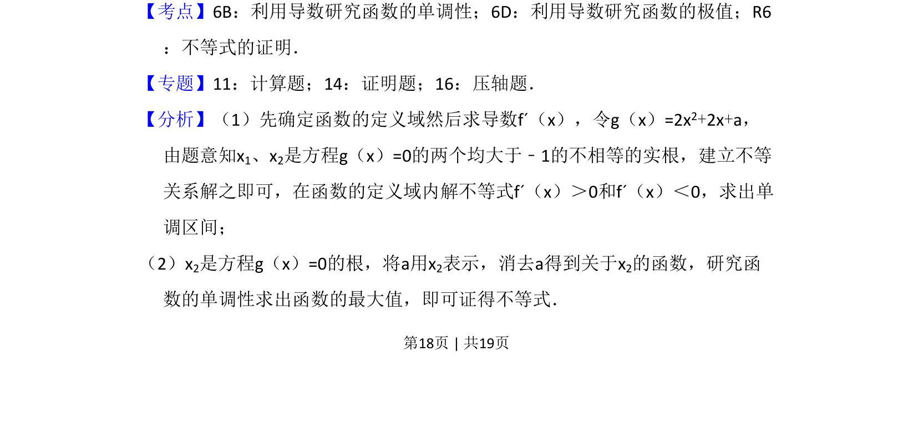
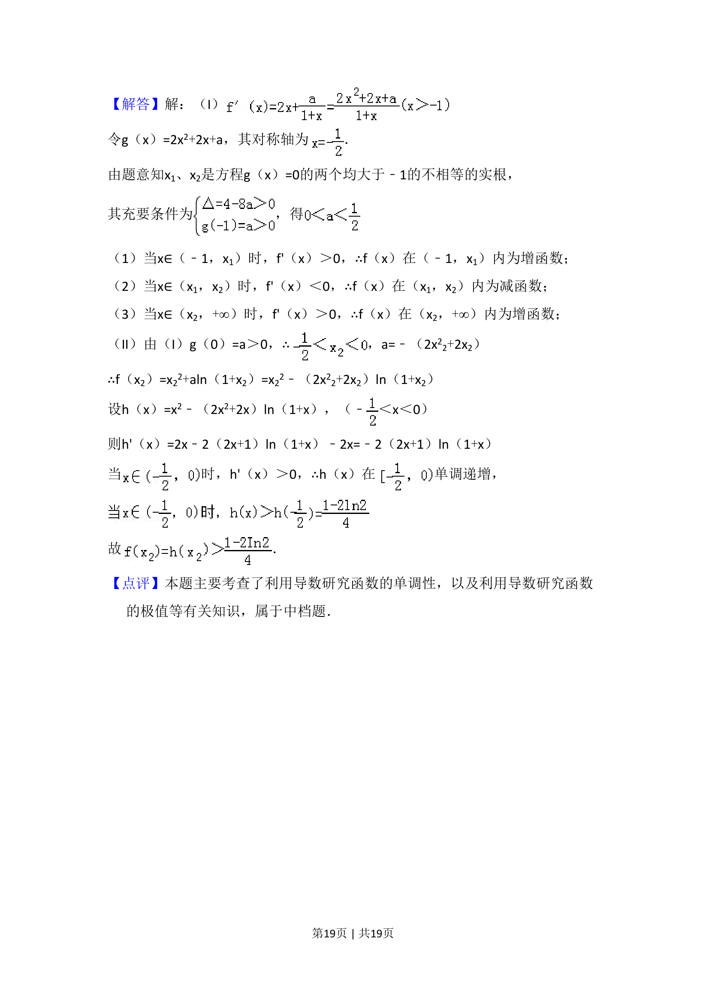

考点：利用导数研究函数的单调性 利用导数研究函数的极值 不等式的证明
利用导数研究函数的单调性
利用导数研究函数的极值
不等式的证明

本题考查含参函数极值点存在条件、单调性讨论及极值点相关不等式证明。


📄 原 PDF 第 18 页：素材/真题/吉林/2008-2024·（吉林）数学高考真题/2009年高考数学试卷（理）（全国卷Ⅱ）（解析卷）.pdf
素材/真题/吉林/2008-2024·（吉林）数学高考真题/2009年高考数学试卷（理）（全国卷Ⅱ）（解析卷）.pdf